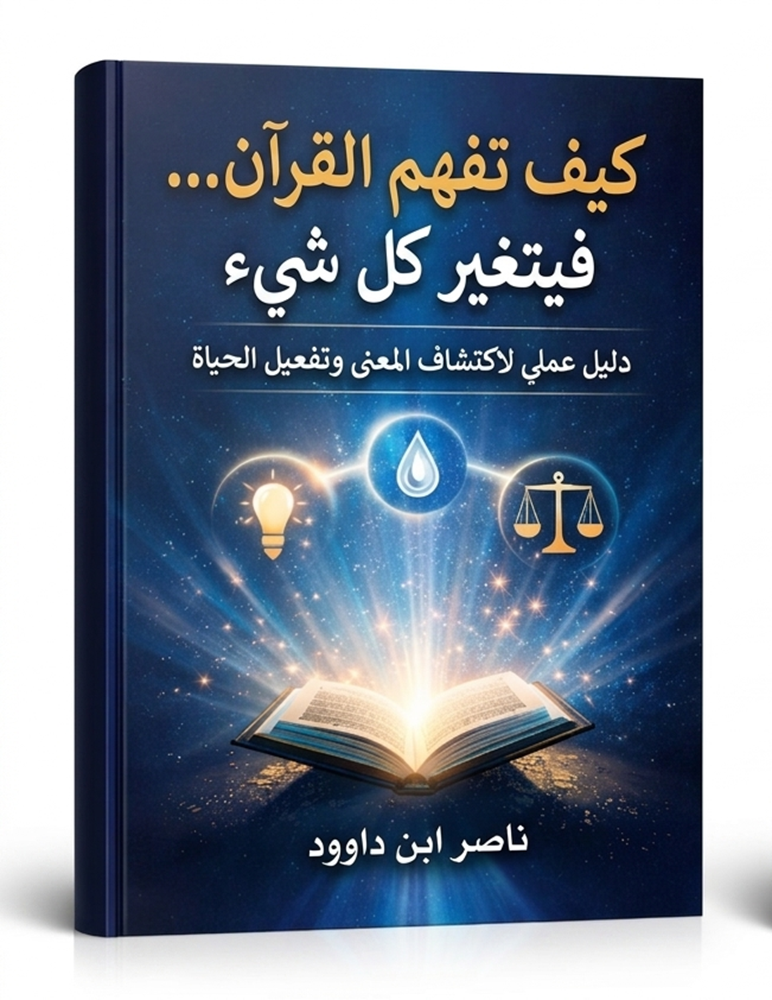
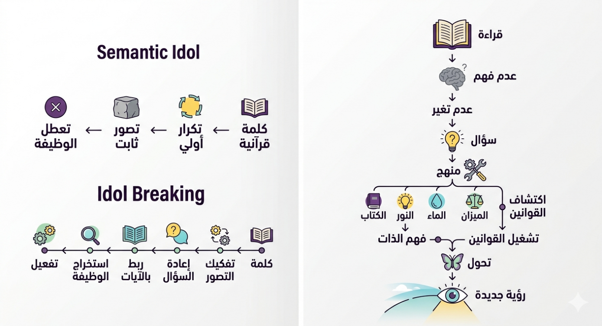
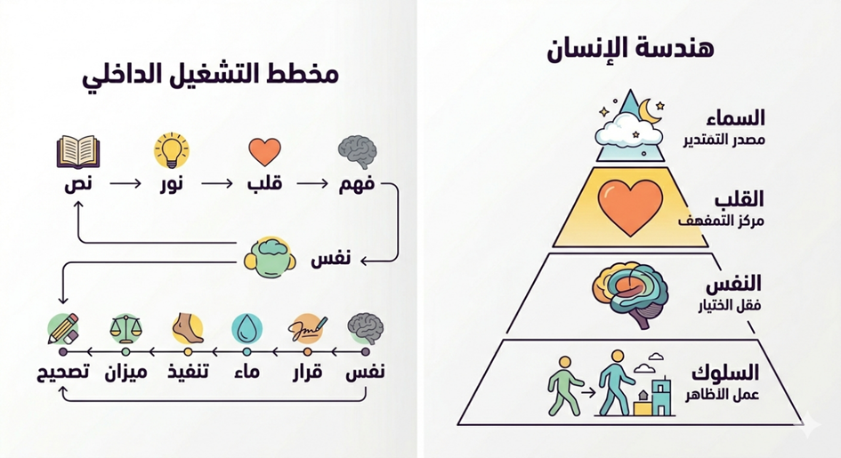
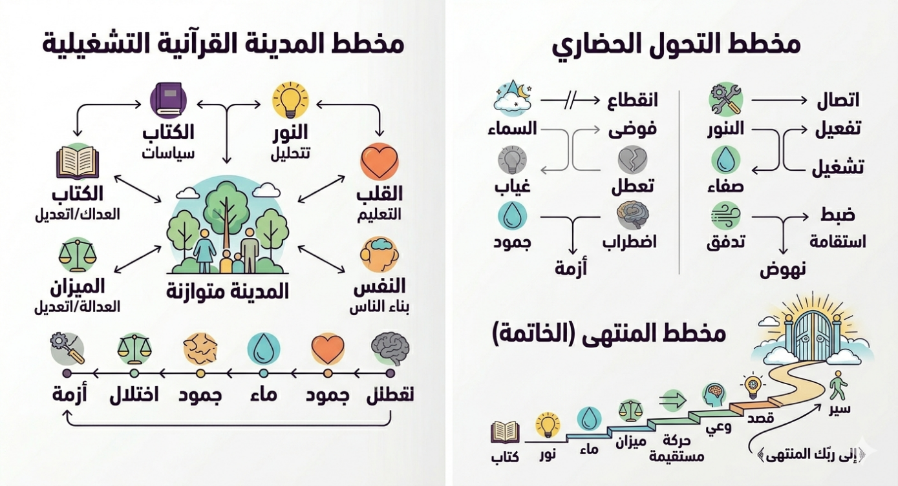

دليل عملي لاكتشاف المعنى وتفعيل الحياة
نقرأ
القرآن… كثيرًا.
نحفظ آياته… ونرددها.
نستمع إليه… بخشوع.
لكن دعنا نسأل السؤال الذي يتجنبه كثيرون:
لماذا لا يتغير شيء؟
لماذا
تبقى حياتنا كما هي…
رغم كل هذا القرب من القرآن؟
نقرأ عن
النور… ونعيش في حيرة.
نقرأ عن الهداية… ونشعر بالضياع.
------
المشكلة ليست في القرآن.
هذه أول حقيقة يجب أن نواجهها.
القرآن لم
يتغير…
لكن طريقة قراءتنا له هي التي تحتاج إلى مراجعة.
لقد
اعتدنا أن نقرأ الكلمات كأنها “تعريفات”:
نسأل: ماذا تعني هذه الكلمة؟
فنحصل على جواب… ثم نغلق الصفحة… وينتهي كل شيء.
لكن ماذا لو كان هذا السؤال ناقصًا؟
ماذا لو
كان السؤال الأهم هو:
كيف تعمل هذه الكلمة في حياتي؟
------
هناك فرق
كبير بين أن تعرف المعنى…
وبين أن ترى أثره.
الفرق بين
من يقرأ كلمة “نور” …
ومن يراها كأداة يرى بها العالم.
------
هذا
الكتاب ليس تفسيرًا جديدًا،
ولا محاولة لاستبدال ما كُتب قبله.
بل هو دعوة بسيطة… لكنها عميقة:
أن تغيّر
طريقة سؤالك،
فتتغير طريقة فهمك،
فتتغير حياتك.
------
لماذا
هذا الكتاب؟
هناك سؤال صامت يرافق كثيرًا من الناس:
كيف يمكن
لكتاب نؤمن أنه هداية…
أن نقرأه كثيرًا، ثم لا يتغير فينا شيء يُذكر؟
نقرأ…
نحفظ… نستمع…
لكن في حياتنا اليومية:
المشكلة
ليست في أننا لا نقرأ…
بل في أننا لا نعرف كيف نقرأ.
------
أين
يكمن الخلل؟
القرآن يقدّم نفسه بوصفه:
نورًا…
وهدى…
وبيانًا…
وشفاءً…
وهذه ليست
أوصافًا شعرية،
بل وظائف حقيقية.
فإذا غاب
الأثر…
فالخلل ليس في النص،
بل في طريقة تعاملنا معه.
------
من
قراءة النص… إلى تشغيله
تعودنا أن نتعامل مع القرآن بطريقتين:
لكن هناك مستوى ثالث غالبًا ما يغيب:
كيف يتحول النص إلى أداة تغيّر حياتك؟
هذا الكتاب محاولة للانتقال من:
نص يُقرأ…
→ إلى شيء يُستخدم
→ إلى نظام يُفهم ويُشغَّل
------
ماذا
يفعل هذا الكتاب؟
هذا
الكتاب لا يقدّم معلومات كثيرة،
بل يقوم بثلاث خطوات بسيطة:
سنكتشف
معًا أن بعض الكلمات في القرآن
ليست مجرد مفاهيم…
بل أدوات تعمل داخل حياتك، مثل:
------
الهدف
الحقيقي
الهدف ليس
أن “تفهم أكثر” …
بل أن:
بمعنى أدق:
أن يتغير “نظام رؤيتك” للحياة.
------
كيف
تقرأ هذا الكتاب؟
هذا ليس كتابًا للقراءة السريعة.
اقرأه كأنك:
توقّف عند
الأسئلة،
وجرّب الأمثلة،
وراقب ما يتغير فيك.
------
ماذا
قد يتغير؟
قد لا
تخرج بمعلومات كثيرة…
لكن قد يحدث شيء أعمق:
وربما الأهم من ذلك:
لن تعود تقرأ القرآن كما كنت من قبل.
------
هذا
ليس نهاية… بل بداية
ما بين
يديك ليس كتابًا فقط،
بل بداية طريقة جديدة في الفهم.
فإذا
قرأته بعين الباحث،
وطبّقت ما فيه،
فإن
القرآن لن يبقى نصًا تقرؤه…
بل سيصبح شيئًا ترى به… وتفهم به… وتعيش به.
وهنا فقط…
يبدأ التغيير الحقيقي.
خريطة سريعة لفهم القرآن… وكيف
يتغير كل شيء
هذا الكتاب ليس تفسيرًا تقليديًا،
ولا عرضًا معلوماتيًا للمعاني،
بل هو محاولة لإعادة بناء طريقة الفهم نفسها.
ينطلق من إشكالية بسيطة في ظاهرها،
عميقة في جذورها:
لماذا نقرأ القرآن كثيرًا… ولا يتغير
فينا شيء؟
أولاً: تشخيص الخلل
يبيّن الجزء الأول أن المشكلة ليست
في القرآن،
بل في طريقة تعاملنا معه.
فالقراءة السائدة غالبًا ما تكون:
فينتج عن ذلك:
اختلال المفهوم
↓
قراءة سطحية
↓
تعطيل الوظيفة
↓
تشوش الوعي
↓
جمود الحياة
كما يكشف هذا الجزء ظاهرة “الصنم
الدلالي”،
حيث تتحول الكلمات إلى معانٍ جامدة تمنعها من أداء
وظيفتها.
ثانياً: بناء المنهج
ينتقل الكتاب إلى تقديم طريقة عملية
للفهم تقوم على:
ويُقدَّم بروتوكول واضح يمكن للقارئ
تطبيقه على أي مفهوم قرآني.
ثالثاً: اكتشاف القوانين الكبرى
يكشف الكتاب أن القرآن لا يقدّم
مفاهيم معزولة،
بل قوانين تشغيل تتحكم في الوعي والحياة، من أهمها:
هذه القوانين لا تُفهم نظريًا فقط،
بل تُشغَّل داخل الإنسان.
رابعاً: هندسة الإنسان
يربط الكتاب هذه القوانين ببنية
الإنسان الداخلية:
ويفسّر من خلالها ثلاث مشكلات مركزية:
خامساً: من الفهم إلى التحول
يصل الكتاب إلى مرحلة التحول، حيث:
ويُظهر أن المشكلة الحقيقية ليست في
نقص المعرفة،
بل في:
الفجوة بين الفهم والتشغيل
سادساً: الخطة الشخصية
ينتهي الكتاب بتقديم نموذج عملي
للتغيير:
فهم
↓
قرار
↓
فعل
↓
تغيير
مع التأكيد أن:
التغيير لا يحدث إلا إذا تحول الفهم
إلى نظام عمل يومي
الخلاصة الكلية
هذا الكتاب ينقل القارئ من:
قراءة القرآن كنص
إلى
التعامل معه كنظام تشغيل للحياة
ومن:
تراكم المعرفة
إلى
تحول الوعي
ومن:
الفهم النظري
إلى
التغيير العملي
النتيجة
بعد هذا المسار، لا يتغير “ما تعرفه”
فقط…
بل تتغير:
باختصار:
هذا الكتاب لا يضيف لك معلومات جديدة
بقدر ما يعيد تشكيل أداة الفهم…
حتى يصبح القرآن مصدر رؤية، لا مجرد نص للقراءة.
كيف
تفهم القرآن… فيتغير كل شيء
1 الجزء الأول: لماذا لا نرى ما نقرأ؟
1.1
الفصل الأول: نقرأ كثيرًا… لكننا لا نتغير
1.2 الفصل الثاني: المشكلة ليست في القرآن
1.3 الفصل الثالث: عندما تتحول الكلمات إلى حواجز
2 الجزء الثاني: الطريقة التي تغيّر كل شيء
2.1
الفصل الرابع: السؤال الذي يغيّر طريقة الفهم
2.2 الفصل الخامس: 7 خطوات لفهم أي كلمة في القرآن
2.3 الفصل السادس: كيف تربط الآيات ببعضها؟
3 الجزء الثالث: قوانين التشغيل القرآنية الكبرى
3.1 الفصل السابع: النور – قانون الإدراك
3.2 الفصل الثامن: الماء — قانون الحركة
3.3 الفصل التاسع: الميزان — قانون الضبط
3.4 الفصل 10: الكتاب — قانون التوجيه
4.1 الفصل الحادي عشر: القلب — مركز الفهم
4.2 الفصل الثاني عشر: النفس — مجال الاختيار
4.3 الفصل الثالث عشر: السماء — مصدر التقدير
5.1 الفصل الخامس عشر: العالم سيتغير أمامك
5.2 الفصل السادس عشر: من الفهم إلى الفعل
5.3 الفصل السابع عشر: خطتك الشخصية - الجزء الأول
5.4 الفصل السابع عشر: خطتك
الشخصية الجزء الثاني (تحديث للفصل)
5.5
الفصل الثامن عشر: عندما تفهم من هو الله… تزلزل الجبال الضالة التي فيك
6 الجزء السادس: الجداول التحليلية الموسوعية (تفكيك المفاهيم وإعادة بنائها)
6.1 النور: (قانون الإدراك والتحول من الظلمات)
6.2 الماء: (قانون الحياة والتدفق)
6.3 الميزان: (قانون الضبط الكوني)
6.4 الكتاب: (قانون التوجيه والترميز)
6.5 السماء: (قانون العلو والتنظيم الفوقي)
6.6 النفس: (قانون الكيان الإنساني الحامل للتكليف)
6.7 القلب: (قانون المركز الإدراكي التشغيلي)
9 المخططات البصرية والخرائط الذهنية لرحلة التحول
القرآني.
9.1
مخطط رحلة التحول الكلي ومفهوم "الصنم الدلالي"
9.2
هندسة الإنسان وآلية التشغيل الداخلي
9.3
. المدينة القرآنية والتحول الحضاري والمنتهى
تخيل هذا المشهد:
شخص يقرأ القرآن كل يوم.
يحفظ سورًا كثيرة.
يستمع لتلاوات مؤثرة.
لكن عندما تنظر إلى حياته…
لا ترى فرقًا كبيرًا.
نفس التردد.
نفس الأخطاء.
نفس الحيرة.
هذا ليس مشهدًا نادرًا… بل هو واقع شائع.
والسؤال هنا ليس اتهامًا… بل محاولة فهم:
ما الذي يحدث؟
هل المشكلة في قلة القراءة؟
لا.
هل المشكلة في ضعف النية؟
أحيانًا… لكن ليس دائمًا.
هناك شيء أعمق.
------
1. القراءة التي لا تتحول إلى رؤية
معظمنا يقرأ… لكنه لا “يرى”.
نمر على الكلمات… لكننا لا نتوقف
عندها.
نسمع المعاني… لكننا لا نربطها بحياتنا.
كأن القرآن أصبح شيئًا “نقرأه” …
لا شيئًا “نعيش به”.
------
2. عندما تتحول الكلمات إلى معلومات
تخيل أنك تقرأ كتابًا عن السباحة.
تعرف كل شيء:
لكنك لم تدخل الماء أبدًا.
هل ستجيد السباحة؟
بالطبع لا.
وهذا بالضبط ما يحدث مع كثير من القراء.
نحن نعرف… لكننا لا نستخدم.
نفهم… لكننا لا نفعّل.
------
3. السؤال الذي نطرحه… يحدد ما نحصل عليه
عندما تقرأ كلمة في القرآن، غالبًا تسأل:
“ماذا تعني هذه الكلمة؟”
فتحصل على معنى…
ثم تنتقل للآية التالية.
لكن ماذا لو سألت:
“كيف تعمل هذه الكلمة في حياتي؟”
هنا يحدث شيء مختلف تمامًا.
------
4. الفرق بين المعرفة والتغيير
المعرفة تقول لك:
“النور هو الهداية”
لكن التغيير يسألك:
“أين الظلام في حياتي؟ وكيف أستخدم النور لأراه؟”
المعرفة تخبرك…
لكن التغيير يحركك.
------
5. بداية التحول
التحول لا يبدأ بمعلومة جديدة…
بل بسؤال جديد.
عندما تغيّر سؤالك…
سيتغير ما تراه في النص.
وعندما يتغير ما تراه…
سيتغير ما تفعله.
------
في الفصول القادمة، سنبدأ بتعلم هذه الطريقة الجديدة خطوة خطوة.
ليس لنضيف معلومات…
بل لنفتح بابًا مختلفًا للفهم.
بابًا إذا دخلته…
لن تعود تقرأ كما كنت من قبل.
وهما قلب الكتاب فعليًا.
أكمل؟
خلاصة الفصل: نقرأ كثيرًا… لكننا لا نتغير
الإشكالية البنيوية
القراءة تحولت إلى فعل “مرور صوتي” لا “نفاذ إدراكي”.
المركز القرآني
﴿أَفَلَا يَتَدَبَّرُونَ الْقُرْآنَ﴾
التحليل
التدبر في اللسان ليس “تفكيرًا عامًا”، بل:
أي أن:
القراءة بدون تدبر = قراءة بدون وصول
مخطط الخلل
قراءة صوتية
↓
غياب التدبر
↓
انقطاع عن المآلات
↓
عدم التغيير
إعادة تعريف
التدبر هو:
تشغيل الآية حتى تُنتج أثرًا في الواقع
تفكيك الفكرة الشائعة… وإعادة تحديد موضع الخلل
الإشكالية المركزية
الوعي المعاصر — حين لا يجد أثرًا للقرآن في حياته — يميل إلى تفسير ذلك عبر أحد مسارين:
لكن كلا المسارين يتجاوز سؤالًا أكثر دقة:
إذا كان القرآن حقًا، فلماذا لا يُنتج الأثر المتوقع؟
------
أولاً: تفكيك الفكرة الشائعة
الفكرة الضمنية التي تسكن العقل دون تصريح هي:
“ربما المشكلة في أن النص لا يلامس واقعنا”
وهذه الفكرة تنشأ من خلط خطير بين:
القرآن يعرّف نفسه بأنه:
﴿لَا
يَأْتِيهِ الْبَاطِلُ﴾
هذا ليس وصفًا، بل “حكم بنيوي”:
أي أن النص محكم، متماسك، غير قابل للخلل الداخلي.
فإذا ثبت كمال البنية، سقط احتمال أن يكون الخلل “فيه”.
------
ثانياً: أين تقع المشكلة فعلاً؟
المشكلة تقع في نقطة وسيطة مهملة:
بين النص… والعقل القارئ
أي في:
آلية الاستقبال
البنية الحقيقية للفهم
نص (كامل)
↓
أداة إدراك (مشوّهة)
↓
فهم (مختزل أو منحرف)
↓
غياب الأثر
------
ثالثاً: طبيعة الخلل في أداة الإدراك
القرآن يشير إلى هذا الخلل بدقة:
﴿وَلَكِنْ تَعْمَى الْقُلُوبُ﴾
العمى هنا ليس حسيًا… بل وظيفي:
إذن الخلل ليس:
في “المعلومة”
بل في:
آلية تحويل المعلومة إلى رؤية
------
رابعاً: كيف تتشوّه آلية الفهم؟
هناك ثلاث طبقات تشوّه الإدراك:
1. التلقّي السلبي
قراءة دون تفاعل → النص يبقى خارجيًا
2. الإسقاط المسبق
نقرأ ونحن نحمل إجابات جاهزة → لا نسمح للنص أن يتكلم
3. التجزئة
نأخذ آيات منفصلة → نفقد النظام الكلي
------
خامساً: مخطط الانحراف
نص كامل
↓
تلقّي سطحي
↓
إسقاط ذهني
↓
فهم مشوّه
↓
عدم التغيير
------
سادساً: إعادة التعريف التأصيلي للمشكلة
المشكلة ليست في القرآن…
بل في:
غياب “نظام تشغيل” يربط النص بالإدراك والسلوك
------
سابعاً: الأثر العملي
بمجرد أن يتغير هذا الفهم:
وهنا تبدأ الرحلة الحقيقية.
خلاصة الفصل: المشكلة ليست في القرآن
المركز القرآني
﴿لَا يَأْتِيهِ الْبَاطِلُ﴾
التحليل
النفي هنا مطلق → يدل على:
إذن:
الخلل لا يمكن أن يكون في النص
بل في آلية الاستقبال
آية داعمة
﴿وَلَكِنْ تَعْمَى الْقُلُوبُ﴾
البنية
النص كامل
↓
أداة الإدراك مختلة
↓
تشوه الفهم
↓
تعطل الأثر
------
كيف تصبح الكلمة صنمًا؟
الإشكالية المركزية
الكلمة التي يفترض أن تكون “مفتاحًا” …
قد تتحول إلى “جدار”.
كيف يحدث ذلك؟
------
أولاً: التعريف الشائع للكلمة
نعتقد أن الكلمة:
لكن هذا تصور ناقص.
------
ثانياً: التحول الخفي
الكلمة تمر بثلاث مراحل:
كلمة
↓
معنى
↓
تصور ذهني
ثم يحدث الانحراف:
تصور ذهني
↓
ثبات
↓
إغلاق
فتتحول الكلمة من:
وسيلة للفهم → إلى قيد على الفهم
------
ثالثاً: الأساس القرآني للمشكلة
﴿وَقَالُوا قُلُوبُنَا فِي أَكِنَّةٍ﴾
“أكنّة” = أغطية
أي أن المشكلة ليست في غياب المعنى…
بل في وجود “غطاء” يمنع الوصول إليه.
------
رابعاً: كيف تصبح الكلمة صنمًا؟
1. التكرار بلا وعي
نسمع الكلمة كثيرًا → نظن أننا فهمناها
2. اختزال المعنى
نختصر المفهوم في تعريف واحد
3. تثبيت الصورة
نربط الكلمة بصورة محددة لا تتغير
4. التوقف عن السؤال
نغلق باب البحث
------
خامساً: مثال بنيوي
كلمة: “النور”
التصور الشائع:
نور = شيء جيد / هداية
لكن عند هذا الحد يتوقف الفهم
بينما في بنيتها:
النور = نظام كشف وتمييز وتوجيه
الاختزال حوّلها من:
أداة تشغيل → إلى فكرة عامة
------
سادساً: أمثلة بسيطة من حياتنا
مثال 1: “الصبر”
التصور الشائع:
التحمل فقط
النتيجة:
بينما في بنيته:
الصبر = ثبات مع استمرار الحركة
------
مثال 2: “التوكل”
التصور الشائع:
ترك الأمور
النتيجة:
بينما في بنيته:
التوكل = اعتماد مع فعل
------
مثال 3: “الرزق”
التصور الشائع:
مال فقط
النتيجة:
بينما في بنيته:
الرزق = كل ما يُمكّنك من الاستمرار (علم، فرصة، قدرة…)
------
سابعاً: مخطط الصنم الدلالي
كلمة
↓
تعريف مختزل
↓
ثبات ذهني
↓
إغلاق المعنى
↓
تعطل الوظيفة
------
ثامناً: إعادة التعريف التأصيلي
الصنم الدلالي هو:
“معنى متوقف يمنع الكلمة من أداء وظيفتها داخل الوعي”
------
تاسعاً: كيف نكسر الصنم؟
------
الخلاصة المشتركة للفصلين
المشكلة ليست في النص
ولا في غياب المعاني
بل في:
توقف الكلمة داخل العقل قبل أن تتحول إلى وظيفة
------
مخطط التحول
كلمة
↓
تفكيك التصور
↓
استعادة الحركة
↓
اكتشاف الوظيفة
↓
تفعيل في الواقع
خلاصة الفصل:
عندما تتحول الكلمات إلى حواجز
المركز القرآني
﴿وَقَالُوا قُلُوبُنَا فِي أَكِنَّةٍ﴾
التحليل
“أكنّة” = أغطية
ليست مشكلة “غياب المعنى”
بل:
تغليف المعنى بتصورات مسبقة
آية موازية
﴿بَلْ قُلُوبُهُمْ فِي غَمْرَةٍ﴾
المخطط
كلمة
↓
تصور جاهز
↓
إغلاق المعنى
↓
تعطل الفهم
هناك لحظة صغيرة… لكنها حاسمة.
لحظة لا تبدو مهمة في ظاهرها،
لكنها قادرة على تغيير كل شيء.
إنها اللحظة التي تسأل فيها نفسك:
“ماذا تعني هذه الكلمة؟”
هذا هو السؤال الذي اعتدنا عليه جميعًا.
نسأله بسرعة،
نحصل على إجابة سريعة،
ثم نواصل القراءة.
لكن المشكلة ليست في السؤال نفسه…
بل في أنه غير كافٍ.
------
1. لماذا لا يكفي سؤال “ماذا تعني؟”
عندما تسأل: “ماذا
تعني هذه الكلمة؟”
فأنت تبحث عن تعريف.
والتعريف… له حدود.
هو يعطيك إطارًا عامًا،
لكنه لا يعطيك “حياة”.
يشبه الأمر أن تعرف تعريف “النار”:
شيء يُحرق.
لكن هذا لا يخبرك:
التعريف يخبرك “ما هي” …
لكنه لا يخبرك “كيف تعمل”.
------
2. السؤال الذي يفتح الباب
الآن جرّب أن تغيّر السؤال قليلًا:
بدل أن تقول:
“ماذا تعني هذه الكلمة؟”
اسأل:
“كيف تعمل هذه الكلمة؟”
قد يبدو الفرق بسيطًا…
لكنه في الحقيقة عميق جدًا.
------
3. ماذا يحدث عندما تغيّر السؤال؟
عندما تسأل: كيف تعمل؟
فأنت لم تعد تبحث عن معلومة…
بل عن وظيفة.
لم تعد تريد تعريفًا…
بل تريد تجربة.
لنأخذ مثالًا بسيطًا:
كلمة: “نور”
إذا سألت: ماذا تعني؟
→ الجواب: الهداية، الإشراق، الوضوح…
ثم ماذا؟ غالبًا لا شيء.
------
لكن إذا سألت: كيف يعمل النور؟
ستبدأ أسئلة جديدة في الظهور:
وهنا… يبدأ التحول.
------
4. من الكلمة إلى الأداة
عندما تسأل “كيف تعمل؟”
تتحول الكلمة من:
تصبح الكلمة مثل “زر” في حياتك…
إذا ضغطت عليه، يحدث شيء.
------
5. تجربة بسيطة
دعنا نقوم بتجربة الآن.
اختر كلمة تعرفها جيدًا:
مثل “ميزان”
ثم اسأل:
ثم اسأل:
ستبدأ برؤية أشياء مثل:
وفجأة…
الكلمة لم تعد نظرية.
أصبحت مرآة.
------
6. لماذا هذا السؤال قوي؟
لأنه يجبرك على:
لم تعد تقرأ القرآن من الخارج…
بل بدأت تراه من الداخل.
------
7. أكبر خطأ نقع فيه
نعتقد أن الفهم يعني:
أن تعرف الشرح
لكن الفهم الحقيقي هو:
أن ترى الأثر
إذا لم يتغير شيء في رؤيتك…
فأنت لم تفهم بعد.
------
8. القاعدة الجديدة
من الآن فصاعدًا، كلما قرأت كلمة في القرآن:
لا تكتفِ بسؤال واحد.
اسأل سؤالين:
أ- ماذا تعني؟
ب- كيف تعمل؟
السؤال الأول يعطيك البداية…
لكن السؤال الثاني يفتح لك الباب.
------
9. بداية طريقة جديدة
هذا السؤال هو أول خطوة…
لكنه ليس الخطوة الوحيدة.
في الفصل القادم، سنحوّل هذا السؤال إلى طريقة عملية واضحة:
10. 7 خطوات
بسيطة
يمكنك استخدامها لفهم أي كلمة في القرآن… وربطها بحياتك.
خطوات ليست معقدة،
لكنها—إذا استخدمتها بصدق—
ستغيّر طريقة قراءتك بالكامل.
------
لأن الفرق الحقيقي…
ليس فيما تقرأه،
بل في كيف تقرأه.
خلاصة الفصل 4: السؤال الذي يغيّر طريقة الفهم
المركز القرآني
﴿كِتَابٌ أَنزَلْنَاهُ إِلَيْكَ لِتُخْرِجَ النَّاسَ مِنَ الظُّلُمَاتِ إِلَى النُّورِ﴾
التحليل البنيوي
الآية لا تعرّف “النور”
بل تصفه بوظيفته:
الإخراج
وهنا التحول:
المفهوم = وظيفة
إعادة التأصيل
الفهم القرآني لا يُبنى على:
“ما هو؟”
بل على:
“ماذا يفعل؟”
في الفصل السابق، تعرّفنا على السؤال الذي يغيّر طريقة الفهم:
“كيف تعمل هذه الكلمة؟”
لكن السؤال وحده لا يكفي.
نحتاج إلى طريقة… خطوات واضحة نمشي عليها.
في هذا الفصل، سنبني معًا طريقة
بسيطة من 7 خطوات.
يمكنك استخدامها مع أي كلمة في القرآن.
ليست معقدة… لكنها قوية.
------
1. توقف عن الافتراض
أول خطوة هي الأصعب:
توقّف.
عندما تقرأ كلمة مثل: “نور” أو
“ميزان” أو “ماء” …
لا تقل مباشرة: “أنا أعرف معناها”.
لأن هذا هو الفخ.
المعنى الذي في ذهنك…
قد يكون جزئيًا، أو موروثًا، أو غير دقيق.
ابدأ من جديد، كأنك تراها لأول مرة.
------
2. ارجع إلى الأصل
كل كلمة لها جذور.
لا تحتاج أن تكون متخصصًا في اللغة،
لكن حاول أن تسأل:
مثال:
“ماء”
ليس فقط سائلًا نشربه…
بل شيء يُحيي ويتحرك ويتدفق.
ابدأ من هذه الفكرة البسيطة.
------
3. اجمع الآيات
لا تكتفِ بآية واحدة.
ابحث عن الكلمة في أكثر من موضع.
حتى لو كانت 3 أو 4 آيات فقط.
ستلاحظ شيئًا مهمًا:
المعنى يبدأ في التوسع…
وتظهر زوايا لم تكن تراها.
------
4. اربط بين الآيات
الآن اسأل:
هنا تبدأ الصورة في التكوّن.
القرآن لا يكرر عبثًا…
بل يضيف طبقات من الفهم.
------
5. اسأل: ماذا تفعل هذه الكلمة؟
هذه هي النقطة المحورية.
انتقل من:
ماذا تعني؟
إلى:
ماذا تفعل؟
مثال:
“النور” :
“الميزان” :
هنا أنت لم تعد تملك تعريفًا…
بل تملك “وظائف”.
------
6. أعد تعريف الكلمة
الآن اكتب تعريفك الخاص—بطريقتك.
ليس تعريفًا معجميًا،
بل تعريفًا “حيًا”.
مثلًا:
هذا التعريف سيكون أداتك.
------
7. طبّقها في حياتك
هذه أهم خطوة.
اسأل نفسك:
إذا لم تصل إلى هذه المرحلة…
فأنت لم تكمل العملية.
------
مثال كامل (بشكل مبسط)
لنأخذ كلمة: “ميزان”
أ- أتوقف عن الافتراض
ب- ألاحظ أنها تتعلق بالقياس والتوازن
ت- أجد آيات تتحدث عن الميزان
ث- ألاحظ أنه مرتبط بالعدل وعدم الطغيان
ج- أستنتج أنه “يضبط”
ح-
أعرّفه:
→ الميزان هو ما يحفظني من الميل والانحراف
خ-
أطبّقه:
→ هل قراراتي متوازنة؟ أم أنني أميل دائمًا لطرف؟
------
لماذا هذه الطريقة فعّالة؟
لأنها تنقلك من:
------
خطأ يجب أن تتجنبه
لا تحاول أن تطبّق الخطوات بسرعة.
خذ كلمة واحدة فقط…
واشتغل عليها بصدق.
القيمة ليست في العدد…
بل في العمق.
------
تمرين بسيط لك
اختر كلمة من القرآن اليوم.
أي كلمة.
ثم طبّق عليها الخطوات السبع.
لا تستعجل.
ولا تبحث عن الكمال.
فقط جرّب.
------
خلاصة الفصل الخامس
المركز القرآني
﴿أَفَلَا يَتَدَبَّرُونَ
الْقُرْآنَ﴾
﴿وَرَتِّلِ
الْقُرْآنَ تَرْتِيلًا﴾
التحليل
الترتيل = ترتيب منظم
التدبر = تتبع وظيفي
وهذا يطابق البروتوكول:
تحرير
↓
جمع
↓
ربط
↓
استخراج
↓
تنزيل
آية حاكمة
﴿وَلَوْ كَانَ مِنْ عِندِ غَيْرِ اللَّهِ لَوَجَدُوا فِيهِ اخْتِلَافًا كَثِيرًا﴾
→ تؤسس لوحدة الشبكة
بعد أن تعلّمنا كيف نفهم الكلمة…
يبقى سؤال مهم:
كيف نفهم الآيات؟
لأن المشكلة لا تكون دائمًا في
الكلمة،
بل في أننا نقرأ كل آية كأنها مستقلة.
نقرأ… ثم ننتقل… ثم ننسى.
كأننا نمر على جُمل منفصلة.
لكن الحقيقة أبسط وأعمق في نفس الوقت:
القرآن ليس جُملًا متفرقة… بل شبكة مترابطة.
------
1. تخيّل الصورة
تخيّل أنك تنظر إلى خريطة.
إذا رأيت نقطة واحدة فقط… لن تفهم
شيئًا.
لكن عندما ترى الطرق التي تربط بينها…
تبدأ الصورة في الظهور.
الآيات تعمل بنفس الطريقة.
------
2. لماذا لا نرى الترابط؟
لأننا نقرأ بشكل “خطي”:
لكن القرآن لا يعمل فقط بهذه الطريقة.
هناك:
------
3. الخطأ الشائع
أن نأخذ آية واحدة…
ونبني عليها فهمًا كاملًا.
هذا يشبه أن تأخذ جملة من كتاب…
وتحاول أن تفهم القصة كلها منها.
------
4. الطريقة البسيطة للربط
لن تحتاج أدوات معقدة.
فقط اتبع هذه الخطوات:
·
الخطوة
1: اختر فكرة واحدة
مثل:
------
·
الخطوة
2: اجمع آيات حولها
حتى لو كانت قليلة.
------
·
الخطوة
3: اسأل: ما الرابط؟
لاحظ:
------
·
الخطوة
4: ابحث عن “الخيط المشترك”
ستبدأ برؤية شيء مثل:
كل الآيات تشير إلى فكرة واحدة… لكن من زوايا مختلفة
وهنا يحدث الفهم الحقيقي.
------
5. مثال بسيط
لنأخذ فكرة: “النور”
ستجد:
في البداية قد تبدو مختلفة…
لكن عند الربط:
النور = ما يكشف الطريق ويُخرجك من الحيرة
------
6. من الآية إلى الصورة
عندما تربط الآيات، يحدث تحول مهم:
وهذه الصورة:
------
7. لا تبحث عن الكمال
لن ترى كل الروابط من أول مرة.
وهذا طبيعي.
ابدأ بروابط بسيطة…
ومع الوقت ستتطور رؤيتك.
------
8. لماذا هذا مهم؟
لأن القرآن لا يُفهم قطعة قطعة.
بل يُفهم عندما:
تتصل أجزاؤه في ذهنك
------
9. تذكّر
إذا بقيت عند المفاتيح…
لن تصل.
وإذا فتحت بابًا واحدًا فقط…
لن ترى البيت كاملًا.
لكن عندما تمشي في الطريق…
تبدأ الرحلة الحقيقية.
خلاصة الفصل السادس
المركز القرآني
﴿اللَّهُ نَزَّلَ أَحْسَنَ الْحَدِيثِ… مَثَانِيَ﴾
التحليل
“مثاني” = نظام ازدواجي
المعنى لا يظهر منفردًا
بل عبر:
العلاقات
البنية
آية
↔ آية
↔ آية
↓
شبكة
↓
معنى كلي
)من المفهوم إلى القانون(
كلنا نريد أن “نرى بوضوح”.
أن نفهم ما يحدث حولنا،
أن نميّز بين الصحيح والخاطئ،
أن نعرف أي طريق نسلك.
لكن الواقع يقول شيئًا مختلفًا:
نحتار.
نتردد.
نخطئ… ثم نكرر نفس الخطأ.
السؤال هنا:
إذا كان “النور” موجودًا… فلماذا لا نراه؟
------
1. المشكلة ليست في غياب النور
غالبًا نظن أن المشكلة هي:
“أنا لا أملك ما يكفي من المعرفة”
لكن في كثير من الأحيان…
المشكلة ليست في نقص المعلومات.
بل في غياب النور.
والفرق كبير.
------
2. ما الفرق بين المعرفة والنور؟
المعرفة تعطيك معلومات.
أما النور… فيعطيك رؤية.
يمكنك أن تعرف أشياء كثيرة…
لكن لا ترى الصورة كاملة.
مثل شخص في غرفة مليئة بالأشياء…
لكنه في الظلام.
المعلومات موجودة.
لكن الرؤية غائبة.
------
3. كيف يعمل النور؟
دعنا نستخدم السؤال الذي تعلمناه:
كيف يعمل النور؟
النور يقوم بثلاث وظائف أساسية:
أ-
يكشف
يُظهر ما كان مخفيًا
ب-
يوضح
يجعل الصورة مفهومة
ت-
3. يميّز
يفصل بين الأشياء المتشابهة
------
4. أين المشكلة إذًا؟
إذا كان النور يكشف ويوضح ويميز…
فالمشكلة تكون عندما:
وهنا تظهر “الظلمات”.
------
5. ما هي الظلمة في حياتك؟
الظلمة ليست فقط غياب الضوء الحسي.
بل هي:
------
6. تجربة بسيطة
فكر في قرار مهم في حياتك الآن.
ثم اسأل:
هذا هو مكان “النور”.
------
7. لماذا نتجنب النور أحيانًا؟
لأن النور… ليس مريحًا دائمًا.
عندما يكشف،
قد يظهر أشياء لا نحبها:
ولهذا، أحيانًا… نفضّل البقاء في “نصف ظلام”.
------
8. كيف تحصل على النور؟
ليس بزيادة المعلومات فقط.
بل بـ:
------
9. النور كأداة يومية
ابدأ باستخدام النور في حياتك:
عندما تحتار، اسأل:
عندما تغضب، اسأل:
------
10. التحول الحقيقي
عندما يبدأ النور في العمل داخلك:
لن تصبح حياتك مثالية…
لكنها ستصبح أوضح.
وهذا فرق كبير.
------
خلاصة الفصل
النور ليس فكرة جميلة…
بل أداة قوية.
إذا استخدمتها:
سترى ما لم تكن تراه
وإذا لم تستخدمها:
ستبقى تدور في نفس الدائرة
خلاصة الفصل 7
الفصل 7: النور — قانون الإدراك
المركز القرآني
﴿اللَّهُ نُورُ السَّمَاوَاتِ وَالْأَرْضِ﴾
التحليل البنيوي
النور هنا:
ليس ضوءًا
بل “نظام إدراك شامل”
يتجلى في:
﴿يَهْدِي اللَّهُ لِنُورِهِ مَن يَشَاءُ﴾
→ الهداية = تفعيل النور
شبكة الآيات
﴿وَيُخْرِجُهُمْ مِنَ
الظُّلُمَاتِ إِلَى النُّورِ﴾
﴿أَوَمَنْ
كَانَ مَيْتًا فَأَحْيَيْنَاهُ… وَجَعَلْنَا لَهُ نُورًا﴾
الاستخراج
النور =
إعادة التعريف
النور هو نظام تشغيل الرؤية الذي يحوّل الجهل إلى إدراك والضياع إلى اتجاه
المركز القرآني
﴿وَجَعَلْنَا مِنَ الْمَاءِ كُلَّ شَيْءٍ حَيٍّ﴾
التحليل
“جعلنا” → قانون عام
“كل شيء” → شمول
آيات داعمة
﴿وَأَنزَلْنَا مِنَ
السَّمَاءِ مَاءً﴾
﴿فَأَحْيَيْنَا
بِهِ الْأَرْضَ﴾
البنية
ماء
↓
نزول
↓
تدفق
↓
إحياء
إعادة التعريف
الماء هو قانون التدفق الذي يحوّل السكون إلى حياة
------
المركز القرآني
﴿وَوَضَعَ الْمِيزَانَ * أَلَّا تَطْغَوْا فِي الْمِيزَانِ﴾
التحليل
“وضع” = تأسيس كوني
“الطغيان” = تجاوز الحد
شبكة الآيات
﴿وَأَقِيمُوا الْوَزْنَ
بِالْقِسْطِ﴾
﴿وَلَا
تُخْسِرُوا الْمِيزَانَ﴾
البنية
ميزان
↓
حد
↓
ضبط
↓
استقرار
إعادة التعريف
الميزان هو النظام الذي يمنع الانحراف ويحفظ الاتزان في كل قرار
------
المركز القرآني
﴿ذَٰلِكَ الْكِتَابُ لَا رَيْبَ فِيهِ هُدًى﴾
التحليل
الكتاب = ليس نصًا فقط
بل:
نظام هداية
آيات داعمة
﴿كِتَابٌ أَنزَلْنَاهُ
لِتُخْرِجَ﴾
﴿وَكُلَّ
شَيْءٍ أَحْصَيْنَاهُ فِي كِتَابٍ﴾
البنية
كتاب
↓
ترميز
↓
توجيه
↓
إخراج
إعادة التعريف
الكتاب هو النظام الرمزي الذي يوجّه الحركة نحو غاية محددة
------
(موقع هذه القوانين داخل الكيان الإنساني)
الجزء الرابع: هندسة الإنسان
(وقع هذه القوانين داخل الكيان الإنساني)
لماذا لا نفهم رغم المعرفة؟
------
الإشكالية المركزية
واحدة من أكثر الظواهر التباسًا
في التجربة الدينية المعاصرة هي هذه المفارقة:
نملك قدرًا واسعًا من المعرفة…
لكننا لا نمتلك وضوحًا في الفهم.
نحفظ، نقرأ، نسمع، نناقش…
ومع ذلك:
وهنا يظهر السؤال الحاسم:
إذا كانت المعرفة موجودة… فأين
يتعطل الفهم؟
------
أولاً: تفكيك التصور الشائع
التصور السائد يختزل الفهم في:
“عملية عقلية ذهنية”
أي:
لكن هذا التصور يصطدم مباشرة
بالبنية القرآنية.
------
ثانياً: التحليل البنيوي للمفهوم
القرآن ينقل “مركز الفهم” من
الدماغ إلى القلب:
﴿لَهُمْ قُلُوبٌ لَا يَفْقَهُونَ بِهَا﴾
هذه الآية لا تتحدث عن الجهل…
بل عن تعطّل أداة الفقه.
ماذا يعني ذلك؟
------
ثالثاً: الفرق بين المعرفة والفهم
|
البعد |
المعرفة |
الفهم |
|
الطبيعة |
معلومات |
إدراك |
|
الموقع |
العقل |
القلب |
|
الأثر |
تراكم |
تحول |
|
النتيجة |
جدل |
تغيير |
------
رابعاً: كيف يعمل القلب؟
القلب في اللسان القرآني ليس مجرد
“مركز شعور”،
بل هو:
مركز معالجة المعنى
يمر عبر ثلاث مراحل:
استقبال
↓
تأثر
↓
توجيه
------
خامساً: أين يحدث الخلل؟
الخلل لا يحدث في “وصول المعلومة”،
بل في معالجتها داخل القلب.
أشكال التعطّل:
1. القسوة
﴿ثُمَّ قَسَتْ قُلُوبُكُمْ﴾
→ المعلومة لا تنفذ
2. الغطاء
﴿قُلُوبُنَا فِي أَكِنَّةٍ﴾
→ المعلومة لا تصل
3. المرض
﴿فِي قُلُوبِهِمْ مَرَضٌ﴾
→ المعلومة تُشوَّه
------
سادساً: مخطط التعطّل
معلومة
↓
قلب غير مهيأ
↓
تشويه / رفض / سطحية
↓
غياب الفهم
↓
عدم التغيير
------
سابعاً: إعادة التعريف التأصيلي
القلب هو:
“المركز الإدراكي التحويلي الذي يستقبل المعنى ويعيد تشكيله ليصبح
دافعًا للسلوك.”
------
ثامناً: لماذا لا نفهم رغم
المعرفة؟
لأننا:
فنحصل على:
معرفة بلا أثر
↓
وعي مشوش
↓
سلوك متناقض
------
تاسعاً: كيف نعيد تفعيل القلب؟
1. إبطاء القراءة
حتى تتحول من مرور إلى استقبال
2. طرح السؤال
ماذا تفعل هذه الآية في حياتي؟
3. ربط المعنى بالواقع
حتى يتحول إلى تجربة
4. الصدق في المواجهة
رؤية الذات كما هي
------
عاشراً: الأثر التحولي
عندما يعمل القلب:
------
الخلاصة البنيوية
المشكلة ليست أننا لا نعرف…
بل أننا:
لا نمتلك قلبًا يعمل بوظيفته
الكاملة
------
مخطط التحول
معرفة
↓
قلب مفعّل
↓
فهم
↓
توجيه
↓
سلوك
------
الكلمة الختامية
حين يُصلح القلب…
لا تحتاج إلى معلومات أكثر
بل تحتاج إلى:
رؤية أوضح لما تعرفه أصلًا
------
وهنا يبدأ الفهم الحقيقي.
لماذا
لا نطبّق رغم الفهم؟
------
الإشكالية
المركزية
بعد
أن يتضح أن المشكلة ليست في نقص المعرفة، وأن الفهم يتعطل في القلب، تظهر طبقة
أعمق من التعقيد:
قد نفهم…
ومع ذلك لا نطبّق.
نرى
الصواب بوضوح،
نقتنع به،
بل قد نشرحه للآخرين…
لكن
عند لحظة الفعل:
وهنا
يتشكل السؤال الحاسم:
إذا
كان الفهم حاضرًا… فلماذا يغيب التطبيق؟
------
أولاً:
تفكيك التصور الشائع
التصور
السائد يفترض:
“من يفهم… يطبّق تلقائيًا”
وهذا
افتراض غير دقيق، لأنّه يختزل الإنسان في كائن معرفي فقط،
بينما البنية القرآنية
تكشف أنه:
كائن
اختياري
------
ثانياً:
التحليل البنيوي للمفهوم
القرآن
يقدّم “النفس” بوصفها مجال الاختيار:
﴿وَنَفْسٍ وَمَا سَوَّاهَا﴾
﴿فَأَلْهَمَهَا فُجُورَهَا وَتَقْوَاهَا﴾
هذه
الآيات تؤسس لبنية مزدوجة:
أي
أن النفس ليست:
بل:
ميدان
ترجيح
------
ثالثاً:
الفرق بين الفهم والاختيار
|
البعد |
الفهم (القلب) |
الاختيار (النفس) |
|
الوظيفة |
إدراك |
ترجيح |
|
النتيجة |
رؤية |
قرار |
|
الخلل |
عمى |
ضعف
إرادة |
|
الأثر |
وضوح |
فعل |
------
رابعاً:
كيف تعمل النفس؟
النفس
لا تعمل بشكل آلي،
بل عبر تفاعل مستمر بين:
البنية:
فهم
↓
رغبة
↓
مقاومة
↓
اختيار
------
خامساً:
أشكال النفس في القرآن
1. النفس
الأمّارة
﴿إِنَّ النَّفْسَ
لَأَمَّارَةٌ بِالسُّوءِ﴾
→ تدفع نحو الأسهل
------
2. النفس
اللوّامة
﴿وَلَا أُقْسِمُ
بِالنَّفْسِ اللَّوَّامَةِ﴾
→ تدرك الخطأ بعد الفعل
------
3. النفس
المطمئنة
﴿يَا أَيَّتُهَا النَّفْسُ
الْمُطْمَئِنَّةُ﴾
→ انسجام بين الفهم
والفعل
------
سادساً:
أين يحدث الخلل؟
الخلل
ليس في الفهم،
بل في:
ترجيح
النفس لما تهواه على ما تراه
------
مخطط
التعطّل
فهم
واضح
↓
نفس ضعيفة
↓
تأجيل / تبرير
↓
عدم التطبيق
↓
تراكم التناقض
------
سابعاً:
إعادة التعريف التأصيلي
النفس
هي:
“مجال الاختيار الذي يحدد تحويل الفهم
إلى فعل، عبر ترجيح أحد المسارين الممكنين.”
------
ثامناً:
لماذا لا نطبّق؟
1. هيمنة اللحظة
نختار
ما يريح الآن
2. ضعف الإرادة
عدم
القدرة على الاستمرار
3. التبرير
تحويل
الخطأ إلى مبرر
4. الانفصال عن
العاقبة
عدم
استحضار النتيجة
------
تاسعاً:
كيف نفعّل النفس؟
1. تقليل الفجوة
بين الفهم والفعل
تنفيذ
سريع لما يُفهم
2. بناء عادات
صغيرة
بدل
قرارات كبيرة مؤجلة
3. استحضار
العاقبة
ربط
الفعل بنتيجته
4. مراقبة النفس
رصد
الاختيارات يوميًا
------
عاشراً:
الأثر التحولي
عندما
تُضبط النفس:
------
الخلاصة
البنيوية
المشكلة
ليست أننا لا نفهم…
بل أننا:
لا
نحسن إدارة لحظة الاختيار
------
مخطط
التحول
فهم
↓
نفس منضبطة
↓
قرار
↓
تنفيذ
↓
اتساق
------
الكلمة
الختامية
ليس
المطلوب أن تعرف أكثر…
بل أن:
تختار
وفق ما تعرف
------
وهنا
يبدأ التغيير الحقيقي في حياتك.
لماذا نرى الواقع بشكل سطحي؟
------
الإشكالية المركزية
بعد استعادة وظيفة القلب (الفهم)
وضبط مجال النفس (الاختيار)، يبقى سؤال حاسم يفسّر كثيرًا من الإخفاقات:
قد نفهم… ونريد أن نطبّق…
لكننا نقرأ الواقع قراءة سطحية.
نرى النتائج ولا نرى الأسباب،
نلاحق الظواهر ولا نبلغ الجذور،
فنخطئ التقدير… فتخطئ القرارات.
وهنا يتشكل السؤال:
لماذا نرى الواقع من أسفل فقط؟
وأين يغيب البعد الذي يمنح الرؤية عمقها؟
------
أولاً: تفكيك التصور الشائع
التصور السائد يفترض أن فهم الواقع
يتم عبر:
وهذا ضروري… لكنه غير كافٍ.
لأن الواقع — في بنيته — ليس طبقة
واحدة،
بل تركيب متعدد المستويات.
------
ثانياً: التحليل البنيوي للمفهوم
القرآن يقدّم “السماء” لا بوصفها
فضاءً ماديًا فقط،
بل كـ مستوى علوي يصدر عنه التقدير والتدبير:
﴿يُدَبِّرُ
الْأَمْرَ مِنَ السَّمَاءِ إِلَى الْأَرْضِ﴾
الدلالة البنيوية:
------
ثالثاً: الفرق بين الرؤية السطحية
والرؤية البنيوية
|
البعد |
الرؤية السطحية |
الرؤية البنيوية |
|
المجال |
الظاهر |
الظاهر + الباطن |
|
المنطلق |
الحدث |
القانون |
|
الاتجاه |
من أسفل |
من أعلى إلى أسفل |
|
النتيجة |
رد فعل |
قرار واعٍ |
------
رابعاً: كيف يتشكل الواقع؟
الواقع لا يبدأ من الأرض… بل يمر عبر
مسار:
تقدير (سماء)
↓
توجيه (كتاب)
↓
كشف (نور)
↓
فهم (قلب)
↓
اختيار (نفس)
↓
حركة (ماء)
↓
ضبط (ميزان)
↓
واقع مشهود
------
خامساً: أين يحدث الخلل؟
الخلل يحدث حين نقطع هذا المسار،
ونبدأ من الأسفل:
واقع ظاهر
↓
تحليل جزئي
↓
تفسير سطحي
↓
قرارات خاطئة
------
سادساً: أشكال السطحية
1. التركيز على النتائج
نرى “ما حدث” دون “لماذا حدث”
2. اختزال الأسباب
إرجاع الظواهر إلى عامل واحد
3. إهمال السنن
عدم البحث عن القوانين الحاكمة
4. الانفصال عن المصدر
فهم الواقع دون ربطه بالتقدير
------
سابعاً: مخطط التعطّل
واقع
↓
رؤية سطحية
↓
سوء تقدير
↓
قرار خاطئ
↓
نتائج متكررة
------
ثامناً: إعادة التعريف التأصيلي
السماء هي:
“مستوى التقدير العلوي الذي تُصاغ فيه القوانين والاتجاهات، ويُنزَّل
منه المعنى إلى الواقع عبر سلسلة من الوسائط.”
------
تاسعاً: كيف نعيد بناء الرؤية؟
1.
البحث
عن القانون لا الحدث
ما السنّة التي تفسر ما أراه؟
2.
الربط
بين الظاهر والباطن
ما الذي لا يُرى لكنه يؤثر؟
3.
القراءة
من الأعلى
ما الاتجاه الكلي قبل التفاصيل؟
5. إدراك التدرج
كل واقع هو نتيجة مسار
------
عاشراً: الأثر التحولي
عندما تتصل بالسماء كمصدر للتقدير:
------
الخلاصة البنيوية
المشكلة ليست في نقص المعلومات عن
الواقع…
بل في:
غياب البعد العلوي الذي يمنح هذه
المعلومات معناها
------
مخطط التحول
واقع
↓
ربط بالسماء
↓
فهم القانون
↓
تقدير صحيح
↓
قرار واعٍ
------
الكلمة الختامية
الرؤية الحقيقية لا تبدأ مما تراه
عيناك…
بل مما:
تدركه بصيرتك عن مصدر ما ترى
------
وهنا ينتقل الإنسان من العيش داخل
الواقع… إلى فهم كيف يُصنع الواقع.
------
(من الفهم إلى التغيير)
الفصل الرابع عشر:
ستبدأ برؤية أشياء لم تكن تراها
المركز القرآني
﴿فَكَشَفْنَا عَنكَ غِطَاءَكَ﴾
التحليل
التحول ليس إضافة معرفة
بل:
إزالة غطاء
------
من انفصال الرؤية إلى وحدة الوجود
المقروء
------
المركز القرآني
﴿سَنُرِيهِمْ
آيَاتِنَا فِي الْآفَاقِ وَفِي أَنفُسِهِمْ﴾
------
الإشكالية المركزية
حين يبدأ التحول الحقيقي، لا يتغير
“الكتاب” الذي تقرأه…
بل يتغير العالم الذي تراه.
الناس ينظرون إلى نفس الواقع،
لكنهم لا يرون نفس الشيء.
ومع ذلك:
وهنا يتشكل السؤال:
هل الواقع ثابت… أم أن طريقة
رؤيتنا هي التي تصنعه؟
------
أولاً: تفكيك التصور الشائع
التصور السائد يفترض:
“العالم الخارجي منفصل عن النص”
أي:
فنقرأ النص داخل المصحف،
ونعيش الواقع خارجًا عنه.
وهذا هو أصل الانفصال.
------
ثانياً: البنية القرآنية للرؤية
الآية المركزية تعيد بناء العلاقة:
﴿سَنُرِيهِمْ
آيَاتِنَا﴾
------
البنية الكلية
نص
↔ نفس
↔ كون
→ وحدة المسطور والمنشور
------
ثالثاً: ماذا يعني ذلك؟
يعني أن:
فإذا فُصلت هذه الثلاثة:
ضاع المعنى
------
رابعاً: كيف نرى قبل التحول؟
نص (معزول)
↓
قراءة نظرية
↓
واقع منفصل
↓
حيرة
------
خامساً: كيف نرى بعد التحول؟
نص
↓
نور
↓
قلب
↓
إدراك
ثم:
نفس
↔ كون
فتصبح:
كل ظاهرة = آية
كل حدث = رسالة
كل تجربة = معنى
------
سادساً: أشكال التحول في الرؤية
1. من الحدث إلى الإشارة
لم تعد ترى ما يحدث فقط…
بل ماذا يعني
------
من الفوضى إلى النظام
تكتشف وجود قوانين خلف الظواهر
------
2. من الصدفة إلى السنن
كل شيء له سبب وبنية
------
3. من الخارج إلى الداخل
تفهم أن ما تراه مرتبط بما فيك
------
سابعاً: مخطط التحول الإدراكي
نص
↓
تفعيل النور
↓
إصلاح القلب
↓
ضبط النفس
↓
رؤية الآيات في الكون
↓
وحدة الفهم
------
ثامناً: إعادة التعريف التأصيلي
العالم ليس مجرد “واقع خارجي”،
بل هو:
“مجال ظهور الآيات التي تتفاعل مع وعي الإنسان بقدر جاهزيته الإدراكية.”
------
تاسعاً: لماذا “سيتغير” العالم؟
العالم في ذاته لا يتغير بالضرورة…
لكن:
طريقة قراءتك له هي التي تتغير
فتنتقل من:
------
عاشراً: أثر هذا التحول
------
الخلاصة البنيوية
التحول الحقيقي ليس في:
ما تقرأه
بل في:
كيف ترى كل شيء من خلال ما تقرأه
------
مخطط الوحدة
نص (مسطور)
↔ نفس (مدركة)
↔ كون (منشور)
→ شبكة واحدة من المعنى
------
الكلمة الختامية
حين تكتمل هذه الرؤية…
لن يكون القرآن كتابًا تقرؤه فقط،
ولن يكون العالم واقعًا تعيشه فقط،
بل سيصبح:
نظامًا واحدًا متكاملًا من الآيات
------
وعندها… نعم، سيبدو لك أن العالم
قد تغيّر.
------
الفجوة التي تعطل التحول
------
المركز القرآني
﴿لِمَ
تَقُولُونَ مَا لَا تَفْعَلُونَ﴾
------
الإشكالية المركزية
بعد أن يتشكل الفهم، وتُبنى الرؤية،
ويبدأ العالم في الانكشاف…
يبقى العائق الأشد تأثيرًا:
الفجوة بين ما نعرفه… وما نفعله
نقول الصواب،
نشرح الحق،
نُدرك الطريق…
لكن عند لحظة التنفيذ:
وهنا يتحول الفهم — إن لم يُستكمل —
إلى عبء.
------
أولاً: تفكيك الفجوة
الآية لا توبّخ على الجهل…
بل على:
الانفصال بين القول والفعل
وهذا الانفصال ليس أخلاقيًا فقط،
بل بنيوي.
------
ثانياً: التحليل البنيوي للفجوة
الفجوة ليست في “المعرفة”
ولا في “الإرادة” وحدها،
بل في:
غياب “نظام التشغيل” الذي يربط
بينهما
------
البنية الحقيقية
معرفة
↓
(انقطاع)
↓
لا فعل
------
بينما البنية الصحيحة
معرفة
↓
تشغيل
↓
فعل
------
ثالثاً: أين يحدث الانقطاع؟
1. بعد الفهم مباشرة
نفهم… لكن لا نترجم
2. عند اتخاذ القرار
نؤجل بدل أن نحسم
3. أثناء التنفيذ
نتوقف عند أول مقاومة
------
رابعاً: أسباب الفجوة
1. تضخم المعرفة
تراكم دون تطبيق
2. غياب الربط
عدم تحويل الفهم إلى خطوة عملية
3. رهبة البداية
تضخيم الفعل في الذهن
4. ضعف الاستمرارية
الانقطاع السريع
------
خامساً: مخطط التعطّل
فهم
↓
تردد
↓
تأجيل
↓
عدم فعل
↓
تكرار الفجوة
------
سادساً: إعادة التعريف التأصيلي
الفجوة هي:
“انفصال المعرفة عن التشغيل، بسبب غياب آلية تحويل الفهم إلى خطوات
قابلة للتنفيذ.”
------
سابعاً: كيف نردم الفجوة؟
1.
تحويل
الفهم إلى فعل مباشر
كل فهم يجب أن ينتج “خطوة الآن”
------
2.
تقليل
حجم الفعل
بدل قرارات كبيرة…
ابدأ بأصغر تطبيق ممكن
------
3.
بناء
تسلسل
فعل صغير → استمرار → تراكم
------
إدخال الميزان
مراجعة مستمرة لتصحيح المسار
------
ثامناً: مخطط التشغيل
فهم
↓
تحديد خطوة
↓
تنفيذ فوري
↓
مراجعة
↓
تطوير
------
تاسعاً: الأثر التحولي
عندما يُفعّل هذا الربط:
------
عاشراً: الخطر الخفي
أخطر ما يمكن أن يحدث:
أن تتحول المعرفة إلى بديل عن الفعل
فتشعر أنك “تقدمت”
…
وأنت في الواقع لم تتحرك
------
الخلاصة البنيوية
المشكلة ليست في أننا لا نعرف ماذا
نفعل…
بل في أننا:
لا نحول ما نعرفه إلى نظام عمل
------
مخطط التحول
معرفة
↓
تشغيل
↓
فعل
↓
اتساق
↓
تحول
------
الكلمة الختامية
ليس المطلوب أن تعرف الطريق…
بل أن:
تسير فيه — خطوة خطوة
------
وهنا فقط… يتحول الفهم إلى حياة.
------
من الفهم إلى التغيير الفعلي
------
المركز القرآني
﴿إِنَّ
اللَّهَ لَا يُغَيِّرُ مَا بِقَوْمٍ﴾
------
الإشكالية المركزية
بعد هذا المسار الكامل — من تفكيك
الخلل، إلى بناء المنهج، إلى اكتشاف القوانين —
يصل القارئ إلى لحظة فاصلة:
إما أن يبقى كل ما قرأه “فهمًا جميلًا”
…
أو يتحول إلى خطة تغيير حقيقية.
وهنا يتشكل السؤال النهائي:
كيف يتحول هذا الفهم إلى برنامج
شخصي يُغيّر حياتك فعليًا؟
------
أولاً: تفكيك الوهم الشائع
الوهم الأكثر انتشارًا هو:
“التغيير يحدث تلقائيًا بعد الفهم”
لكن الآية الحاكمة تقطع هذا الوهم:
﴿إِنَّ
اللَّهَ لَا يُغَيِّرُ مَا بِقَوْمٍ﴾
التغيير ليس حدثًا مفاجئًا،
بل نتيجة مسار داخلي واعٍ.
------
ثانياً: البنية القرآنية للتغيير
التغيير لا يبدأ من الخارج،
بل من داخل الإنسان:
فهم
↓
قرار
↓
فعل
↓
تغيير
------
ثالثاً: تحليل كل مرحلة
1.
الفهم
هو نقطة الانطلاق
→ رؤية واضحة لما يجب أن يتغير
لكن الفهم وحده لا يكفي
------
2.
القرار
لحظة الحسم الداخلي
الفرق بين:
------
3.
الفعل
ترجمة القرار إلى حركة
وهنا يتحدد الصدق الحقيقي
------
4.
4. التغيير
نتيجة تراكم الأفعال، لا فعل واحد
------
رابعاً: أين يفشل الناس؟
1. عند الفهم
يتوقفون عند الإدراك
2. عند القرار
يترددون
3. عند الفعل
يؤجلون
------
خامساً:
مخطط التعطّل
فهم
↓
تردد
↓
لا قرار
↓
لا فعل
↓
لا تغيير
------
سادساً: إعادة التعريف التأصيلي
الخطة الشخصية هي:
“نظام تحويل الفهم إلى قرارات وأفعال متتابعة، تؤدي إلى تغيير تدريجي
مستمر.”
------
سابعاً: كيف تبني خطتك؟
1. حدّد نقطة واحدة فقط
لا تحاول تغيير كل شيء
------
2. اربطها بمفهوم قرآني
مثلاً:
------
3. حوّلها إلى فعل يومي
واضح، بسيط، قابل للتكرار
------
4. ضع نظام متابعة
هل التزمت اليوم؟
------
ثامناً: نموذج تطبيقي
الفهم:
أحتاج إلى وضوح في قراراتي (النور)
القرار:
سأتوقف قبل كل قرار مهم
الفعل:
أسأل: ما الخيار الأوضح؟
التغيير:
تقليل الأخطاء تدريجيًا
------
تاسعاً: مخطط التشغيل الشخصي
فهم
↓
تحديد هدف
↓
قرار
↓
فعل يومي
↓
متابعة
↓
تعديل
↓
تحول
------
عاشراً: سر الاستمرارية
ليس في:
بل في:
استمرارية الخطوات الصغيرة
------
الخلاصة البنيوية
التغيير لا يحدث لأنك “أردت”
…
بل لأنك:
بنيت نظامًا يُجبرك على الفعل
------
مخطط التحول
فهم
↓
قرار
↓
فعل
↓
تكرار
↓
تحول
------
الكلمة الختامية
القرآن لن يغير حياتك…
إذا بقي خارج نظامك اليومي
لكنه سيغير كل شيء…
إذا أصبح:
مرجع قراراتك اليومية
------
ابدأ بخطوة واحدة…
لكن لا تتوقف.
من
الفهم إلى التغيير تحت سلطان الربوبية
------
المركز
القرآني
﴿إِنَّ اللَّهَ لَا
يُغَيِّرُ مَا بِقَوْمٍ﴾
------
الإشكالية
المركزية
إذا
كان الفهم قد تَشكّل،
والرؤية قد اتضحت،
والقوانين قد انكشفت…
فلماذا
لا يحدث التغيير؟
الجواب
لم يعد في “المعرفة”،
ولا حتى في “المنهج”،
بل في شيء أعمق:
علاقتك
بالله نفسه
لأن
الخلل النهائي ليس في:
------
أولاً:
تفكيك الوهم الأخير
قد
يصل القارئ إلى مرحلة متقدمة من هذا الكتاب،
ويفهم:
لكن
يبقى خطر خفي:
أن
تتحول هذه القوانين إلى “نظام مستقل” في ذهنه
وكأن
الله:
وهذا
هو أكبر صنم دلالي.
------
ثانياً:
إعادة بناء المركز
﴿هُوَ اللَّهُ الَّذِي لَا
إِلَٰهَ إِلَّا هُوَ﴾
ليست
نفيًا فقط…
بل إثبات:
أن
كل شيء:
------
التحليل
البنيوي
الله
ليس:
بل
هو:
النظام
الحي الذي يُدير كل قانون لحظة بلحظة
------
البنية
الحقيقية للتغيير
الله
↓
تقدير (سماء)
↓
توجيه (كتاب)
↓
كشف (نور)
↓
فهم (قلب)
↓
اختيار (نفس)
↓
فعل (ماء)
↓
ضبط (ميزان)
↓
تغيير
------
ثالثاً:
لماذا لا يحدث التغيير؟
لأن
الإنسان قد:
والقرآن
يحسم ذلك:
ليس
لأن الهداية ناقصة…
بل لأن:
الاستعداد
الداخلي مختل
------
رابعاً:
الاستقامة كنقطة تحول
الاستقامة
ليست خلقًا أخلاقيًا فقط،
بل هي:
محاذاة
كاملة مع النظام الإلهي
أي:
------
مخطط
التعطّل
فهم
↓
نفس غير مستقيمة
↓
انحراف في القرار
↓
فعل مختل
↓
عدم التغيير
------
خامساً:
عندما تفهم من هو الله
يحدث
التحول الأعظم:
ليس
في معلوماتك…
بل في:
طريقة
رؤيتك لكل شيء
------
1.
الله ليس “القانون” … بل الحيّ القيوم
النور،
الماء، الميزان، الكتاب…
ليست أنظمة مستقلة
بل:
﴿يُدَبِّرُ الْأَمْرَ مِنَ
السَّمَاءِ إِلَى الْأَرْضِ﴾
------
2.
من “أرى القوانين” إلى “أرى بالله”
هنا
يحدث التحول النوعي:
فتصبح
الرؤية:
------
3.
نتيجة الاستقامة
﴿لَا خَوْفٌ عَلَيْهِمْ
وَلَا هُمْ يَحْزَنُونَ﴾
ليست
حالة شعورية…
بل نتيجة بنيوية:
------
سادساً:
الصلاة الكبرى
الصلاة
ليست فقط حركة جسدية،
بل:
تشغيل
دائم للرؤية
وذلك
عبر:
------
البنية
نص
↔ نفس
↔ كون
→ تدفق مستمر للمعنى
------
سابعاً:
رزق السماء
﴿وَفِي السَّمَاءِ
رِزْقُكُمْ وَمَا تُوعَدُونَ﴾
الرزق
ليس ماديًا فقط،
بل:
كلما
ارتقيت:
نزل
عليك من السماء ما يناسب سموك
------
ثامناً:
الزلزال الداخلي
كل
فهم حقيقي لله ينتج:
------
مخطط
التحول
فهم
الله
↓
انهيار الأوهام
↓
صفاء القلب
↓
ضبط النفس
↓
استقامة الفعل
↓
تغيير حقيقي
------
تاسعاً:
إعادة تعريف الخطة الشخصية
الخطة
ليست:
بل
هي:
“مسار استقامة مستمر داخل النظام
الإلهي، يُترجم الفهم إلى فعل تحت وعي دائم بالله.”
------
عاشراً:
النموذج التشغيلي
فهم
↓
استقامة
↓
قرار
↓
فعل
↓
مراجعة
↓
قرب من الله
↓
تغيير
------
الخلاصة
البنيوية
التغيير
لا يحدث لأنك:
بل
لأنه:
استقمت
داخلها تحت وعيك بالله
------
الكلمة
الختامية
ليس
المطلوب أن “تدير حياتك بالقوانين” …
بل
أن:
تعيش
داخل النظام الحي الذي اسمه الله
------
وهنا
فقط…
لا يتغير شيء فيك
فحسب،
بل يتغير كل شيء
من حولك.
إن أكبر صنم دلالي بقي في وعينا هو
أن نختزل الله في «السنن والقوانين» فقط، كأنما هو مجرد «مبرمج» وضع الأنظمة ثم
تركها تسير.
لكن القرآن لا يقول ذلك.
الله ليس «ممثلاً للقوانين» فحسب… بل
هو النظام نفسه، والقانون نفسه، والحق نفسه، والجمال نفسه، والطريق المستقيم نفسه،
والإرادة الفعالة نفسها.
﴿هُوَ اللَّهُ الَّذِي لَا إِلَٰهَ
إِلَّا هُوَ﴾ — ليس تعريفاً سلبياً، بل إثباتاً أن كل شيء يعود إليه مباشرة، بدون
وسيط، وبدون فجوة.
عندما تفهم هذا الفهم الجديد، يحدث
شيء خطير داخلك:
تزلزل الجبال الضالة التي كانت
تحجب عنك رؤية الله.
1. الله ليس «القانون»… بل هو النظام الحيّ
الذي يدير كل قانون
النور، الماء، الميزان، الكتاب —
كلها أدوات بيده.
هو الذي يُنزل النور، ويُرسل الماء،
ويضع الميزان، ويُوحي بالكتاب.
﴿يُدَبِّرُ الْأَمْرَ مِنَ
السَّمَاءِ إِلَى الْأَرْضِ﴾ — لا يترك شيئاً عشوائياً.
استواؤه على العرش ليس «جلوساً» بل سيادة
كاملة على كل نظام، بحيث لا يخرج شيء عن إرادته ولا يفلت من تقديره.
2. عندما ترى الله في كل شيء… تصبح عينك عين
الله
هذا هو التحول الذي ينتظره كل متدبر
صادق:
أن تنتقل من «أرى السنن» إلى «أرى به».
فجأةً تصبح رؤيتك حديداً — لا
تخترقها ظلمة ولا تخدعها أصنام.
تصبح خليفة الله حقاً، لأن
الروح التي نفخها فيك من روحه هي التي تسمح لك أن ترى كما يرى.
﴿لَا خَوْفٌ عَلَيْهِمْ وَلَا هُمْ
يَحْزَنُونَ﴾
هذه ليست وعوداً عاطفية… بل نتيجة
طبيعية لمن استقام.
عندما تستقيم، تتنزل الملائكة
ممدّة لك، ويصبح الله قريباً منك أقرب من حبل
الوريد.
بيانات الله (الآيات الكونية
والقلبية) تتنزل عليك على مدار الساعة.
3. الصلاة الكبرى: تدبر القرآن المسطور والمنشور
صلاتك الكبرى ليست مجرد صلاة جسدية…
بل تدبر القرآن المسطور (النص)
والقرآن المنشور (الكون) معاً.
القرآن بتدبره نور لك لفهم دينك.
أما التأمل وفهم سننه فهو
ارتقاء رزقكم في السماء.
﴿وَفِي السَّمَاءِ رِزْقُكُمْ وَمَا
تُوعَدُونَ﴾
هذه الآية تعني بالضبط:
عندما تسمو وتبحث وتمشي في الأرض
المعرفية وفي البحث العلمي، فأنت ترتقي…
فتنزل عليك السماء رزقاً من السمو
نفسه: التفكر، العلم، البحث العلمي.
هذا هو رزق المؤمن الحقيقي —
الذي عرف من هو الله بكتبه ونوره وسننه وكلماته التي لا تحصى.
4. ليلة القدر الشخصية… وتزلزل الجبال الضالة
كلما فهمت «من هو الله» فهماً
جديداً، يحدث زلزال داخلي:
- تتفتت الجبال الضالة التي
بنيتها داخل نفسك (الأصنام الدلالية، الخوف، الاعتماد على غير الله).
- تتهاوى الأكنة التي كانت
على قلبك.
- يصبح بصرك حديداً، فترى ما
كان خافياً، وتسمع ما كان مسكوتاً عنه.
هذا هو سلطان البصيرة
الحقيقي:
ليس أن تعرف قوانين الله فقط،
بل أن تعيش داخل النظام الحيّ
الذي اسمه الله.
الله لا يهدي الفاسقين… لأنهم لا
يريدون أن يُهدوا.
لكن من فتح قلبه وطهر نفسه من
الأصنام… يصبح مستقيماً، فيُمدّ بالنور، ويُدبّر أمره من السماء إلى الأرض، ويصبح
جزءاً من جنود الله الذين يديرون الملكوت.
------
1) جدول
تحليلي موسّع
|
البعد |
التحليل |
|
الجذر اللغوي |
(ن و ر): ظهور بعد خفاء، انكشاف، إشراق |
|
الاستعمال القرآني |
يأتي مفردًا غالبًا مقابل “الظلمات” (التي تأتي جمعًا) → دلالة على وحدة المصدر وتعدد أشكال الضلال |
|
الحقول الدلالية |
النور ↔ الظلمات / النور ↔ الهداية / النور ↔ الحياة / النور ↔ البصيرة |
|
الصيغ القرآنية |
نور – نورهم – نوره – سراجًا منيرًا |
|
العلاقات البنيوية |
النور سبب الإخراج – شرط الرؤية – نتيجة الإحياء |
|
الوظائف |
كشف – تمييز – توجيه – إحياء إدراكي |
|
التعريف التأصيلي |
نظام إدراكي يُخرج الإنسان من تعددية الوهم إلى وحدة الرؤية |
|
أثره المنهجي |
تحويل القراءة إلى عملية كشف |
|
أثره السلوكي |
وضوح – حسم – تقليل التردد |
------
2) الاستقراء القرآني (شبكة الآيات)
أ. النور كقانون كلي
﴿اللَّهُ نُورُ
السَّمَاوَاتِ وَالْأَرْضِ﴾
→ النور ليس ظاهرة… بل بنية حاكمة للوجود الإدراكي
------
ب. النور كأداة إخراج
﴿لِتُخْرِجَ النَّاسَ مِنَ
الظُّلُمَاتِ إِلَى النُّورِ﴾
→ الوظيفة المركزية: التحويل
------
ج. النور كحياة
﴿أَوَمَنْ كَانَ مَيْتًا
فَأَحْيَيْنَاهُ… وَجَعَلْنَا لَهُ نُورًا﴾
→ الحياة الحقيقية = إدراك
------
د. النور كمسار
﴿يَسْعَىٰ نُورُهُم بَيْنَ
أَيْدِيهِمْ﴾
→ النور ليس لحظة… بل عملية مستمرة
------
3) الاستخراج البنيوي
من خلال الشبكة:
نص
↓
نور
↓
إدراك
↓
تمييز
↓
حركة صحيحة
------
4) إعادة
التعريف الأكاديمي
النور هو:
“نظام إدراكي تكويني يُنتج الرؤية الصحيحة عبر كشف البنية الخفية للواقع، مما يمكّن الفاعل من اتخاذ قرار مطابق للحقيقة.”
------
5) أثر إعادة التعريف
------
1) جدول
تحليلي موسّع
|
البعد |
التحليل |
|
الجذر |
(م و ه): سيولة، اضطراب، حركة |
|
الاستعمال القرآني |
غالبًا مرتبط بالإنزال، الإحياء، الإنبات |
|
الحقول |
الماء ↔ الحياة / الماء ↔ السماء / الماء ↔ الأرض / الماء ↔ الإحياء |
|
الصيغ |
ماء – ماءً – ماؤها |
|
العلاقات |
نزول → تدفق → اختراق → إحياء |
|
الوظائف |
تحريك – نقل – تحويل – إنبات |
|
التعريف التأصيلي |
قانون حركي يحوّل الإمكان إلى تحقق |
|
الأثر المنهجي |
ربط المعرفة بالحركة |
|
الأثر السلوكي |
الاستمرارية – مقاومة الجمود |
------
2) الاستقراء
القرآني
أ. الماء كمصدر الحياة
﴿وَجَعَلْنَا مِنَ الْمَاءِ
كُلَّ شَيْءٍ حَيٍّ﴾
→ قانون كلي
------
ب. الماء كفعل إنزال
﴿وَأَنزَلْنَا مِنَ
السَّمَاءِ مَاءً﴾
→ الحركة تبدأ من “فوق” (المصدر)
------
ج. الماء كإحياء
﴿فَأَحْيَيْنَا بِهِ
الْأَرْضَ﴾
→ التحول من موت إلى حياة
------
د. الماء كتشكل
﴿فَسَالَتْ أَوْدِيَةٌ
بِقَدَرِهَا﴾
→ الماء يتشكل حسب القابل
------
3) البنية
ماء
↓
نزول
↓
تدفق
↓
تفاعل
↓
حياة
------
4) التعريف الأكاديمي
“الماء هو قانون التدفق الوجودي الذي يُفعّل الإمكان الكامن عبر الحركة المستمرة، وفق قابلية البنية المستقبِلة.”
------
5) الأثر
------
1) جدول
تحليلي موسّع
|
البعد |
التحليل |
|
الجذر |
(و ز ن): تقدير، قياس، ضبط |
|
الاستعمال |
مرتبط بالقسط، النهي عن الطغيان |
|
الحقول |
الميزان ↔ القسط / الميزان ↔ الطغيان / الميزان ↔ الاستقامة |
|
العلاقات |
وضع → حد → ضبط → استقرار |
|
الوظائف |
معايرة – منع الانحراف – تحقيق التوازن |
|
التعريف التأصيلي |
قانون ضبط يحكم العلاقات ويمنع تجاوز الحدود |
|
الأثر المنهجي |
تحويل القرار إلى عملية قياس |
|
الأثر السلوكي |
الاعتدال – الاتزان |
------
2) الاستقراء
القرآني
أ. الميزان كقانون موضوع
﴿وَوَضَعَ الْمِيزَانَ﴾
→ ليس خيارًا بشريًا
------
ب. الهدف منه
﴿أَلَّا تَطْغَوْا فِي
الْمِيزَانِ﴾
→ منع الانحراف
------
ج. الأمر التشغيلي
﴿وَأَقِيمُوا الْوَزْنَ
بِالْقِسْطِ﴾
→ تطبيق واعٍ
------
3) البنية
ميزان
↓
حدود
↓
ضبط
↓
استقرار
------
4) التعريف الأكاديمي
“الميزان هو نظام تقويمي ضابط يحدد الحدود المثلى للعلاقات والقرارات، بما يمنع الطغيان ويحقق الاستقرار البنيوي.”
------
5) الأثر
------
1) جدول تحليلي موسّع
|
البعد |
التحليل |
|
الجذر |
(ك ت ب): جمع، ضم، تثبيت |
|
الاستعمال |
كتاب = نص + نظام + قدر |
|
الحقول |
الكتاب ↔ الهدى / الكتاب ↔ الإحصاء / الكتاب ↔ الأمر |
|
العلاقات |
جمع → ترميز → توجيه → إخراج |
|
الوظائف |
تنظيم – حفظ – توجيه |
|
التعريف التأصيلي |
نظام رمزي جامع يحدد الاتجاه |
|
الأثر المنهجي |
ربط الأفعال بالغاية |
|
الأثر السلوكي |
وضوح المسار |
------
2) الاستقراء القرآني
أ. الكتاب كهدى
﴿ذَٰلِكَ الْكِتَابُ… هُدًى﴾
------
ب. الكتاب كإخراج
﴿كِتَابٌ… لِتُخْرِجَ النَّاسَ﴾
------
ج. الكتاب كإحصاء
﴿وَكُلَّ شَيْءٍ أَحْصَيْنَاهُ فِي كِتَابٍ﴾
------
3) البنية
كتاب
↓
نظام
↓
توجيه
↓
حركة
------
4) التعريف الأكاديمي
“الكتاب هو منظومة ترميز كلية تجمع القوانين وتوجّه الفعل الإنساني نحو غاية محددة ضمن نظام محسوب.”
------
5) الأثر
------
الجدول التركيبي النهائي
|
القانون |
المجال |
الآية المركزية |
الوظيفة |
النتيجة |
|
النور |
الإدراك |
الله نور السماوات |
كشف |
وضوح |
|
الماء |
الحركة |
وجعلنا من الماء |
تدفق |
حياة |
|
الميزان |
الضبط |
ووضع الميزان |
معايرة |
استقرار |
|
الكتاب |
التوجيه |
ذلك الكتاب |
توجيه |
هداية |
------
الخلاصة المنهجية العليا
القرآن لا يقدّم “مفاهيم منفصلة”
بل “أنظمة تشغيل متكاملة”:
كتاب (يحدد الاتجاه)
↓
نور (يكشف الطريق)
↓
ماء (يحرّك السير)
↓
ميزان (يضبط المسار)
→ ينتج: إنسان فاعل متوازن
1) جدول تحليلي موسّع
|
البعد |
التحليل |
|
الجذر اللغوي |
(س م و): علو، ارتفاع، سمو |
|
الاستعمال القرآني |
السماء مفردًا وجمعًا (سماوات) → طبقات تنظيمية |
|
الحقول الدلالية |
السماء ↔ العلو / السماء ↔ الإنزال / السماء ↔ الأمر / السماء ↔ البناء |
|
الصيغ |
السماء – السماوات – سماء الدنيا |
|
العلاقات البنيوية |
علو → تنزيل → تنظيم → إحاطة |
|
الوظائف |
توجيه علوي – تنظيم شامل – مصدر الأوامر |
|
التعريف التأصيلي |
مستوى علوي منظِّم يصدر عنه التقدير والتوجيه |
|
الأثر المنهجي |
ربط الواقع بمصدر أعلى |
|
الأثر السلوكي |
تجاوز السطحية – بناء رؤية كلية |
------
2) الاستقراء القرآني
أ. السماء كبناء منظّم
﴿وَالسَّمَاءَ
بَنَيْنَاهَا﴾
→ ليست فراغًا بل بنية
------
ب. السماء كمصدر تنزيل
﴿يُدَبِّرُ الْأَمْرَ مِنَ
السَّمَاءِ إِلَى الْأَرْضِ﴾
→ حركة توجيه من الأعلى إلى الأسفل
------
ج. السماء كمصدر رزق
﴿وَفِي السَّمَاءِ
رِزْقُكُمْ﴾
→ الرزق مرتبط بالمصدر العلوي لا بالسطح
------
د. السماء كطبقات
﴿سَبْعَ سَمَاوَاتٍ
طِبَاقًا﴾
→ نظام متعدد المستويات
------
3) الاستخراج البنيوي
سماء
↓
تقدير
↓
تنزيل
↓
تنظيم
↓
واقع
------
4) التعريف الأكاديمي
“السماء هي المستوى العلوي المنظِّم الذي تصدر عنه قوانين التقدير والتوجيه، ويتم عبره تحويل المعنى الكلي إلى واقع جزئي.”
------
5) الأثر
------
1) جدول
تحليلي موسّع
|
البعد |
التحليل |
|
الجذر |
(ن ف س): خروج، تنفس، ذات |
|
الاستعمال |
النفس مفردة غالبًا → وحدة الكيان |
|
الحقول |
النفس ↔ الحياة / النفس ↔ التزكية / النفس ↔ الحساب |
|
العلاقات |
خلق → تسوية → ابتلاء → مصير |
|
الوظائف |
الإدراك – الإرادة – الاختيار |
|
التعريف التأصيلي |
الكيان الداخلي الذي يحمل الوعي والاختيار |
|
الأثر المنهجي |
نقل التحليل من الخارج إلى الداخل |
|
الأثر السلوكي |
المسؤولية – المراقبة الذاتية |
------
2) الاستقراء القرآني
أ. النفس كوحدة خلق
﴿خَلَقَكُمْ مِنْ نَفْسٍ
وَاحِدَةٍ﴾
→ وحدة الأصل
------
ب. النفس كمحل تزكية
﴿قَدْ أَفْلَحَ مَنْ
زَكَّاهَا﴾
→ قابلة للتطوير
------
ج. النفس كمجال صراع
﴿إِنَّ النَّفْسَ
لَأَمَّارَةٌ بِالسُّوءِ﴾
→ ليست ثابتة
------
د. النفس كمحل حساب
﴿كُلُّ نَفْسٍ بِمَا كَسَبَتْ رَهِينَةٌ﴾
------
3) البنية
نفس
↓
إدراك
↓
اختيار
↓
فعل
↓
نتيجة
------
4) التعريف الأكاديمي
“النفس هي البنية الداخلية الواعية التي تمثل مجال الاختيار والتفاعل مع القوانين، وهي نقطة التقاء الإدراك بالإرادة والفعل.”
------
5) الأثر
------
1) جدول
تحليلي موسّع
|
البعد |
التحليل |
|
الجذر |
(ق ل ب): تقلب، تحول |
|
الاستعمال |
القلب كمركز إدراك لا كمجرد عضو |
|
الحقول |
القلب ↔ الفهم / القلب ↔ القسوة / القلب ↔ الطمأنينة |
|
العلاقات |
استقبال → تأثر → توجيه |
|
الوظائف |
الفهم – التمييز – الانعكاس |
|
التعريف التأصيلي |
مركز التحول الإدراكي الذي يعالج المعنى ويوجّه السلوك |
|
الأثر المنهجي |
التركيز على آلية الفهم |
|
الأثر السلوكي |
صفاء – ثبات – استجابة صحيحة |
------
2) الاستقراء القرآني
أ. القلب كأداة فهم
﴿لَهُمْ قُلُوبٌ لَا
يَفْقَهُونَ بِهَا﴾
→ الفقه وظيفة قلبية
------
ب. القلب كمحل قسوة
﴿ثُمَّ قَسَتْ قُلُوبُكُمْ﴾
→ تعطّل الوظيفة
------
ج. القلب كمحل طمأنينة
﴿تَطْمَئِنُّ قُلُوبُهُمْ﴾
→ استقرار بعد الفهم
------
د. القلب كمحل انقلاب
﴿يَوْمَ لَا يَنفَعُ مَالٌ… إِلَّا مَنْ أَتَى اللَّهَ بِقَلْبٍ سَلِيمٍ﴾
------
3) البنية
نص
↓
قلب
↓
فهم
↓
توجيه
↓
سلوك
------
4) التعريف
الأكاديمي
“القلب هو المركز الإدراكي المتحول الذي يستقبل المعنى ويعيد تشكيله ويوجه الفعل، وهو حلقة الوصل بين المعرفة والسلوك.”
------
5) الأثر
------
الجدول التركيبي للمفاهيم الثلاثة
|
المفهوم |
المجال |
الوظيفة |
الخلل عند التعطيل |
النتيجة |
|
السماء |
النظام الكلي |
توجيه علوي |
سطحية الفهم |
فوضى |
|
النفس |
الكيان |
اختيار وفعل |
ضعف الإرادة |
تشتت |
|
القلب |
الإدراك |
فهم وتوجيه |
قسوة/عمى |
انحراف |
------
الربط مع القوانين السابقة
نحصل الآن على منظومة متكاملة:
السماء (مصدر التقدير)
↓
الكتاب (نظام التوجيه)
↓
النور (أداة الرؤية)
↓
القلب (مركز الفهم)
↓
النفس (محل الاختيار)
↓
الماء (الحركة)
↓
الميزان (الضبط)
→ الناتج : إنسان واعٍ متحرك متوازن
------
المخطط الكلي للتحول
خلل في السماء (انقطاع عن الأصل)
↓
تشوش في الكتاب
↓
غياب النور
↓
تعطل القلب
↓
اضطراب النفس
↓
جمود الحركة
↓
انحراف الميزان
اتصال بالسماء
↓
تفعيل الكتاب
↓
تشغيل النور
↓
صفاء القلب
↓
ضبط النفس
↓
تدفق الحركة
↓
استقامة الميزان
أولاً: الإشكالية المركزية
المدن المعاصرة تُدار غالبًا عبر:
فينتج:
تشظي وظيفي
↓
فوضى قرارات
↓
ضغط نفسي
↓
اختلال حضاري
------
ثانيًا: الفرضية التأسيسية
القرآن لا يقدّم “قيمًا وعظية”
بل “قوانين تشغيل” يمكن تحويلها إلى:
نظام مدينة يعمل بوعي
------
ثالثًا: المعمار الكلي للمدينة
المخطط البنيوي
السماء (مصدر التقدير)
↓
الكتاب (النظام المركزي)
↓
النور (مركز التحليل)
↓
القلب (مراكز الفهم)
↓
النفس (الأفراد)
↓
الماء (الحركة الاقتصادية والاجتماعية)
↓
الميزان (نظام الضبط والعدالة)
------
رابعًا: ترجمة القوانين إلى مؤسسات
1) السماء → مجلس التقدير الاستراتيجي
الوظيفة
مخرجاته
الخلل عند غيابه
→ قرارات عشوائية قصيرة المدى
------
2) الكتاب → مركز الترميز والسياسات
الوظيفة
المخرجات
الخلل
→ تضارب القرارات
------
3) النور → مركز التحليل والبصير
الوظيفة
أدواته
الخلل
→ قرارات مبنية على وهم
------
4) القلب → مؤسسات التعليم والتكوين
الوظيفة
المخرجات
الخلل
→ معرفة بلا وعي
------
5) النفس → مراكز بناء الإنسان
الوظيفة
أدوات
الخلل
→ معرفة بلا تطبيق
------
6) الماء → الاقتصاد ونظم الحركة
الوظيفة
المبادئ
الخلل
→ جمود اقتصادي
------
7) الميزان → نظام العدالة والرقابة
الوظيفة
الأدوات
الخلل
→ فساد / تطرف
------
خامسًا: جدول التكامل المؤسسي
|
القانون |
المؤسسة |
الوظيفة |
مؤشر النجاح |
|
السماء |
مجلس التقدير |
وضوح الرؤية |
استقرار الاتجاه |
|
الكتاب |
مركز السياسات |
انسجام القوانين |
قلة التضارب |
|
النور |
مركز التحليل |
دقة الفهم |
قرارات صحيحة |
|
القلب |
التعليم |
عمق الإدراك |
جودة التفكير |
|
النفس |
بناء الإنسان |
قوة الإرادة |
ارتفاع الالتزام |
|
الماء |
الاقتصاد |
التدفق |
نمو مستمر |
|
الميزان |
العدالة |
التوازن |
انخفاض الانحراف |
------
سادسًا: كيف تعمل المدينة يوميًا؟
مثال عملي (قرار اقتصادي)
1. السماء
تحدد: الهدف الاستراتيجي (مثلاً: الاكتفاء الغذائي)
2. الكتاب
يحوّل الهدف إلى سياسات (دعم الزراعة)
3. النور
يحلل:
4. القلب
يُدرّب الناس:
5. النفس
يبني:
6. الماء
يشغّل:
7. الميزان
يراقب:
------
سابعًا: المخطط التشغيلي
فكرة
↓
تحليل (نور)
↓
فهم (قلب)
↓
قرار (نفس)
↓
تنفيذ (ماء)
↓
مراجعة (ميزان)
↓
تطوير (سماء)
------
ثامنًا: أخطر نقطة في النموذج
إذا اختل عنصر واحد:
------
تاسعًا: إعادة تعريف “المدينة”
المدينة ليست:
مباني + طرق
بل:
نظام تشغيل إنساني متكامل
------
عاشرًا: التحول المنهجي النهائي
مدن تقليدية
↓
إدارة جزئية
↓
حلول مؤقتة
↓
أزمات متكررة
مدينة قرآنية
↓
نظام كلي
↓
تشغيل متكامل
↓
استقرار ونمو
من القوانين إلى المنتهى: إعادة
توجيه المسار
لن تعود ترى كما كنت ترى”
التحول ليس معرفة جديدة
المركز القرآني
﴿وَأَنَّ إِلَىٰ رَبِّكَ الْمُنتَهَىٰ﴾
أولاً: الإشكالية الختامية
بعد هذا المسار من التفكيك والبناء، قد يظهر لبس خفي:
حين تتحول القوانين التي اكتشفناها
(النور – الماء – الميزان – الكتاب) إلى غايات بحد ذاتها،
بدل أن تُفهم بوصفها وسائط داخل مسار أكبر.
وهنا يتشكل انحراف جديد:
فهم القوانين
↓
الإعجاب بها
↓
التوقف عندها
↓
تحولها إلى غاية
↓
انقطاع المسار
------
ثانياً: إعادة ضبط المركز
الآية الحاكمة تعيد ترتيب كل شيء:
﴿وَأَنَّ إِلَىٰ رَبِّكَ الْمُنتَهَىٰ﴾
هذه ليست جملة ختامية…
بل مبدأ بنيوي:
كل ما سبق في هذا الكتاب —
من مفاهيم، وقوانين، ومنهج —
لا يكتمل إلا إذا أُعيد ربطه بـ المنتهى.
------
ثالثاً: التحليل البنيوي للقوانين
1. النور
يكشف… لكنه لا يكتفي بالكشف
→ وظيفته أن يوجّهك نحو الحقيقة
2. الماء
يحرّك… لكنه لا يحدد الاتجاه
→ يحتاج إلى غاية
3. الميزان
يضبط… لكنه لا يخلق المعنى
→ يمنع الانحراف فقط
4. الكتاب
يوجّه… لكنه ليس النهاية
→ بل خارطة الطريق
------
البنية الكلية
كتاب
↓
نور
↓
ماء
↓
ميزان
↓
حركة مستقيمة
لكن:
كل هذا لا قيمة له إن لم يكن:
↓
متجهًا نحو “المنتهى”
------
رابعاً: إعادة التعريف التأصيلي
القوانين القرآنية ليست أدوات للنجاح
الدنيوي فقط،
ولا تقنيات لتحسين الحياة فحسب،
بل هي:
“مسارات تشغيلية تقود الإنسان في وعيه وحركته نحو اللقاء بالله.”
------
خامساً: التحول الحقيقي
التحول الذي يتحدث عنه هذا الكتاب ليس:
بل هو:
إعادة تشكيل “أداة الرؤية” نفسها
لأن الإنسان لا يعيش بما يعرف…
بل بما يرى.
------
سادساً: “لن تعود ترى كما كنت ترى”
هذه الجملة ليست وعدًا، بل نتيجة حتمية:
إذا تغيّرت:
فإن:
العالم نفسه سيُعاد بناؤه في وعيك
------
سابعاً: المخطط النهائي للتحول
حالة الانحراف
اختلال المفهوم
↓
قراءة سطحية
↓
تعطيل الوظيفة
↓
تشوش الوعي
↓
جمود الحياة
------
حالة التحول
تحرير المفهوم
↓
بناء الشبكة
↓
استخراج الوظيفة
↓
تنزيل عملي
↓
تحول وجودي
------
ثامناً: من النص إلى الوجود
في بداية هذا الكتاب كان القرآن:
نصًا يُقرأ
وفي نهايته يصبح:
وفي عمقه:
طريقًا إلى الله
------
تاسعاً: الكلمة الأخيرة
ليست المشكلة أن القرآن بعيد…
بل أن:
أدواتنا في رؤيته لم تكن مهيأة
فإذا أُعيد بناء هذه الأدوات،
فإن كل شيء يتغير:
------
خاتمة الخاتمة
هذا الكتاب لم يضف لك عالمًا جديدًا…
بل:
كشف لك العالم الذي كنت تعيش فيه… دون أن تراه.
------
ومن هنا… تبدأ الرحلة الحقيقية.
تجمع هذه الصورة بين مخططين أساسيين:

تركز هذه الصورة على المستوى الفردي:

توسع هذه الصورة النطاق ليشمل
المجتمع والحضارة:
